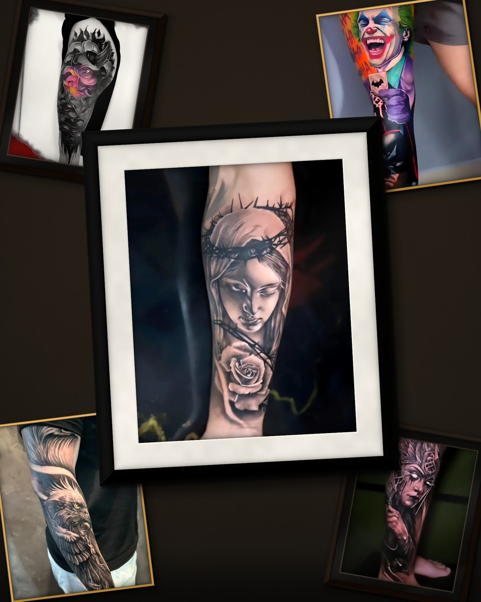
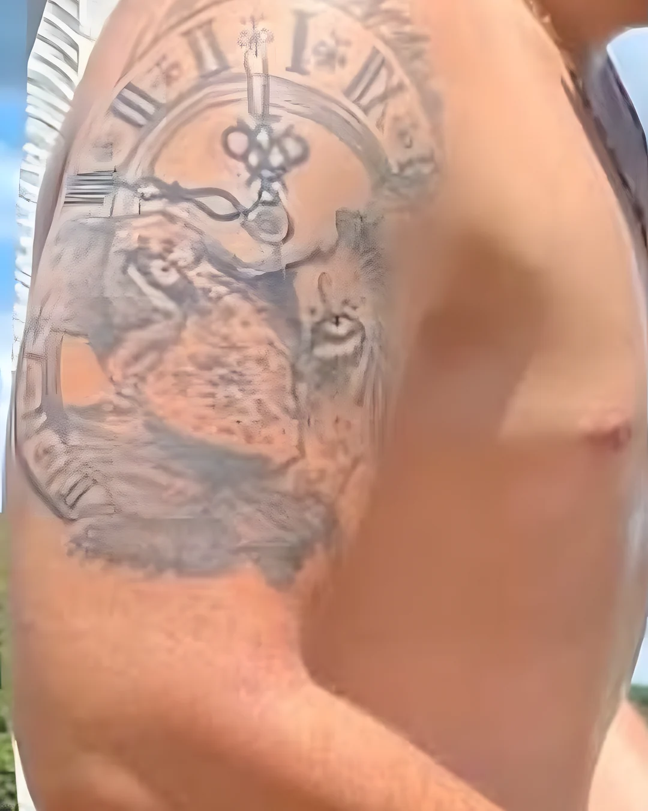
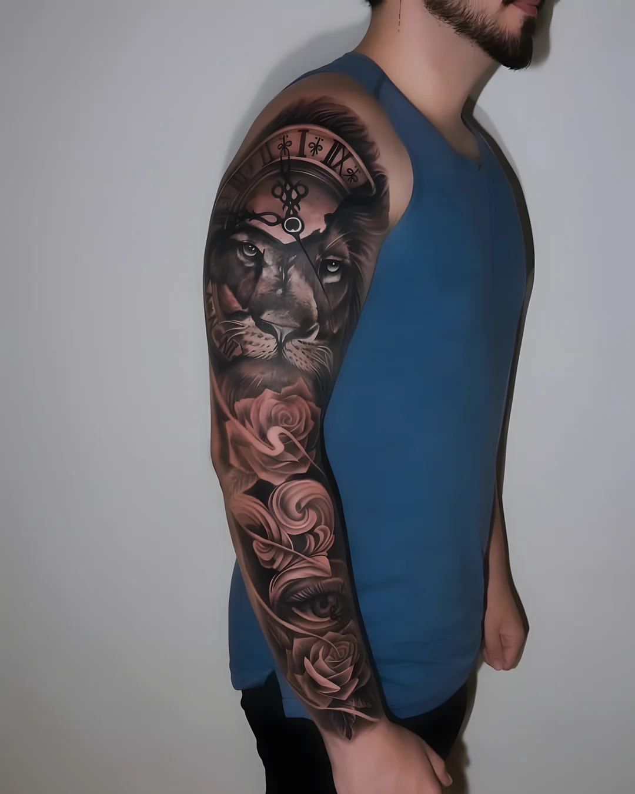
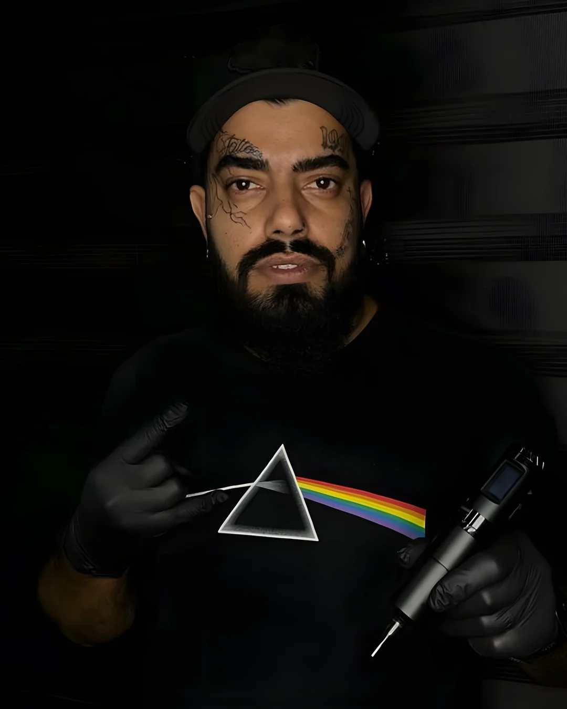

Fausttino Tattoo, realismo em Tangará da Serra-MT
Seu braço. Sua história. Nossa arte.
Trabalhos
Realismo que fica na pele
Preto e cinza, colorido, heróis, fechamentos e coberturas. Toque numa peça para ver em tamanho grande.

Premiadas
Peças que subiram ao palco
Trabalhos levados a convenções no Centro-Oeste e no Norte, avaliados por jurados ao lado de artistas de todo o país.
1º lugar geek
Vilhena Ink, Rondônia. Foram 28 horas de execução para chegar a esta peça.
1º lugar art fusion
Jipa Ink, Rondônia. Estilos diferentes fundidos numa só composição.
- Campo Grande Tattoo FestArtista convidado da 6ª edição, 2023
- Tattoo FairTrabalhos feitos na convenção de Franca-SP, 2022
- 2º lugar tribalConvenção em Rondonópolis-MT, 2023
- Mentoria com Cris NieiroTrês dias de técnica com o artista, 2025
Cobertura e reforma
A tatuagem que você não gosta vira outra história
Quer cobrir, transformar ou dar um novo significado para uma tattoo antiga? O desenho é pensado em cima do que já existe na pele.



Fechamento
O braço inteiro numa única sessão
Fechamento de um braço feito de uma vez, com a arte escolhida por você ou desenvolvida junto. As condições do mês saem pelo WhatsApp.
Artes para o meio antebraço
Escolha uma e toque em "Quero esta": a arte segue junto no pedido.

Sobre
Fausttino
Sou tatuador em Tangará da Serra, no Mato Grosso. Meu trabalho é o realismo em preto e cinza, com espaço para o colorido, para os heróis que a gente carrega desde criança e para as coberturas que devolvem a vontade de mostrar a pele.
Passei por estúdios de Cuiabá e da região, levei peças para convenções do Centro-Oeste e do Norte e sigo estudando, como na mentoria com o Cris Nieiro. Hoje atendo no meu studio privado, com hora marcada, para dar a cada projeto o tempo que ele pede.
“Seu braço. Sua história. Nossa arte.”
Estúdio
Studio privado em Tangará da Serra
Atendimento com hora marcada, um cliente por vez. O endereço é enviado na confirmação do horário.
- Cidade
- Tangará da Serra
Mato Grosso - Atendimento
- Studio privado
com hora marcada - (65) 99360-7381
- @fausttinotattoo
@fausttinostudiotga
Orçamento
Conte a sua ideia
O pedido chega pronto no WhatsApp do Fausttino, com o estilo, o local, o tamanho e a sua disponibilidade.
Escolha o estilo
Preto e cinza, colorido, fechamento ou cobertura.
Diga onde e o tamanho
O local do corpo e uma ideia da medida já ajudam no valor.
Envie o pedido
O formulário abre o WhatsApp com a mensagem escrita.
Feche o horário
Você recebe o valor, a data e o endereço do studio.